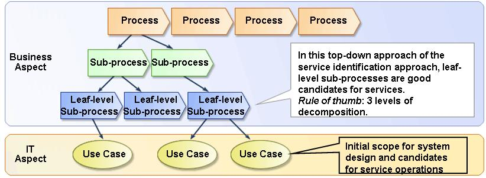

| Guideline: Extracting Use-Cases from Processes |
 |
|
| Related Elements |
|---|
Convert process activities or leaf level process elements into one or more use cases that describe how a business function will be implemented in IT solutions and systems. It links business requirements and business design to technical/system requirements and solution design. Typically, we continue with process decomposition until we start looking at user and system interactions. As we starting noticing user and system interactions in the descriptions of sub processes and process activities we start to identify these interaction as (technical or system) use cases.
Process decomposition can continue to the point at which the processes being identified are the smallest activities
meaningful to the business and which when completed leave related information in a consistent state (either
updated, or returned to its original state). Following figure shows process decomposition into sub-processes and
finally (system/technical) use cases. The notion of a sub-process is a convenient construct used to denote further
levels of refinement of a process, into its constituent parts (sub-processes), recursively. Sub-processes are used to
identify candidate services while the list of use cases provides the initial scope for system design ("business as
usual).  Once we get to the point where we begin to look at user-system interactions, we should stop and label the sub-process a leaf-level sub-process or sometimes also called "Activity or Task". A leaf-level sub-process is a composite of system use cases, for example, a leaf-level sub-process of "Find Customer" in "Process Order" process would have use-cases of "Get Customer Name", "Get Customer Address" and "Get Order Items". |
| © Copyright IBM Corp. 1987, 2012 All Rights Reserved Property of IBM These materials are intended only for use as part of an IBM engagement |